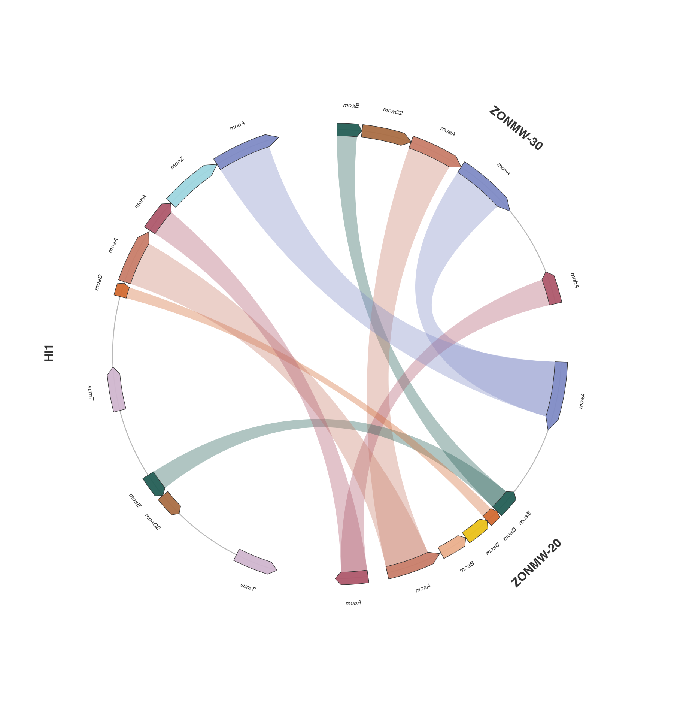
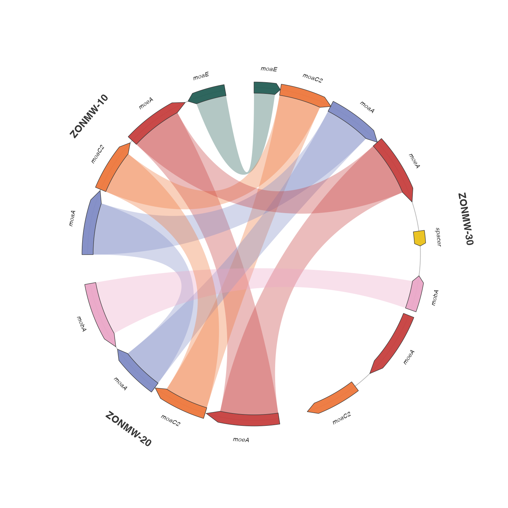

ggsynteny · experimental circular views
Genomes, around a circle.
Chromosome arcs and curved gene arrows, connected by synteny ribbons. Built from native ggplot2 layers, with the familiar casa_natal palette.

Chromosome-level synteny
Rice & sorghum

Gene-level synteny
The moa/moe cluster

Both functions return ordinary ggplot objects. Add themes, labels, or annotations with +, export with ggplot2::ggsave(), or use interactive = TRUE and syn_girafe(p, width_svg = 8, height_svg = 8) for tooltips. Layout data and displayed links remain inspectable.
The circular arrangement does not assert circular chromosomes. Micro contigs span the supplied gene region; unannotated flanks are not inferred. Ribbon widths represent intervals and are not summed estimates of unique coverage.